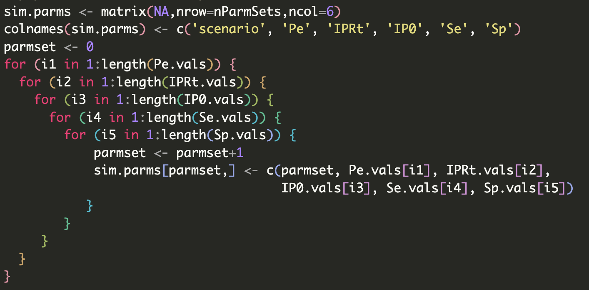

|
 |
Home
Email:
02tahern@med.uvm.edu Online supplemental material"Non-differential misclassification of outcome under (near)-perfect specificity: a simulation study" (Ma et al.)Supplemental Table 2 (summary of results for all 288 simulation scenarios)Supplemental Figure 1: Complete visual results of regressed bias factor on stochastically differential Se when Sp=1Supplemental Figure 2: Visual results of regressed bias factor on stochastically differential Se and SpSupplemental Figure 3: Scatter plots (iteration level) showing bias differential Se and SpInteractive web application: run your own simulation scenario |